Europe
Cleaner energy position, documentation readiness, technical clarity, and dependable long-term supply.

Ferro Silicon · Bhutan
Produced with Bhutan's clean hydroelectric power and modern submerged arc furnace technology for steel, foundry, and international ferro-alloy customers.
Company
Aja Alloys Pvt Ltd is a Bhutan-based Ferro Silicon manufacturer, supplier, and exporter located in Samtse District. As a dedicated FeSi producer, the company serves steelmakers, foundries, traders, and industrial buyers worldwide from its production facility at Norbugang Industrial Park in Samtse, Bhutan, with its corporate office in Thimphu.
The plant utilises Bhutan's clean hydroelectric power and modern submerged arc furnace technology to produce high-quality Ferro Silicon for the steel and foundry industries. With an 18 MVA setup configured as 2 x 9 MVA submerged arc furnaces, Aja Alloys is positioned for sustainable production, clear specifications, reliable documentation, and export-oriented operations.
The team brings substantial experience in Ferro Silicon production and exports from plants situated in India, Malaysia, and Kuwait, supporting disciplined production communication and practical export coordination for international buyers.
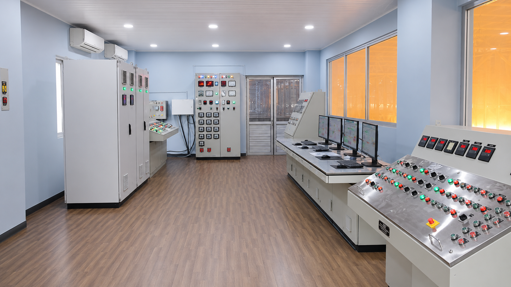
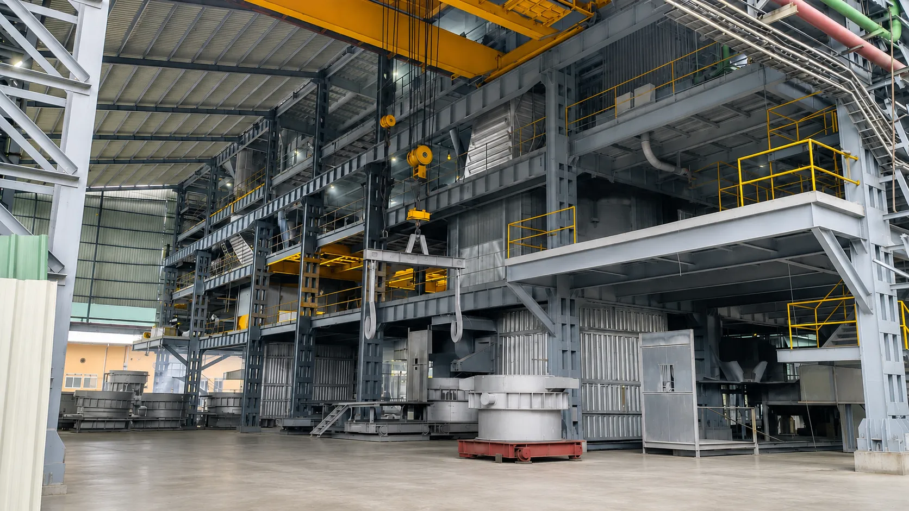
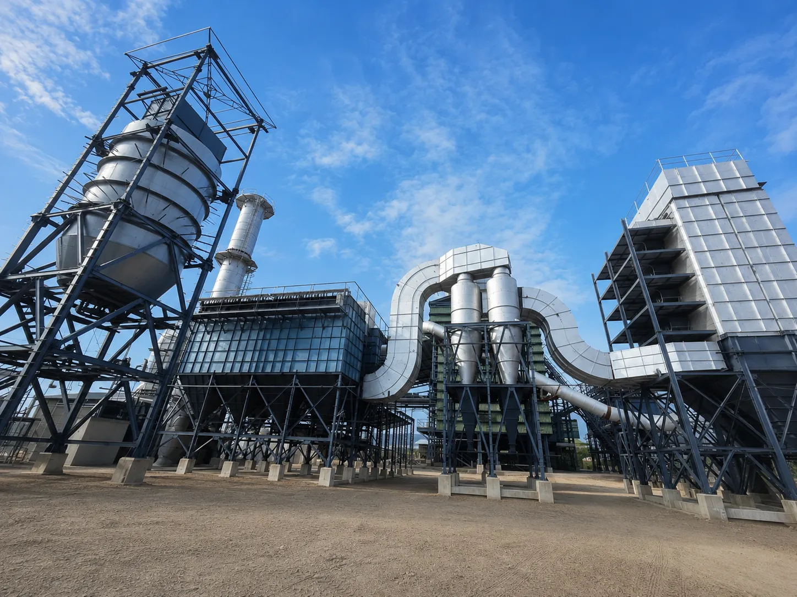

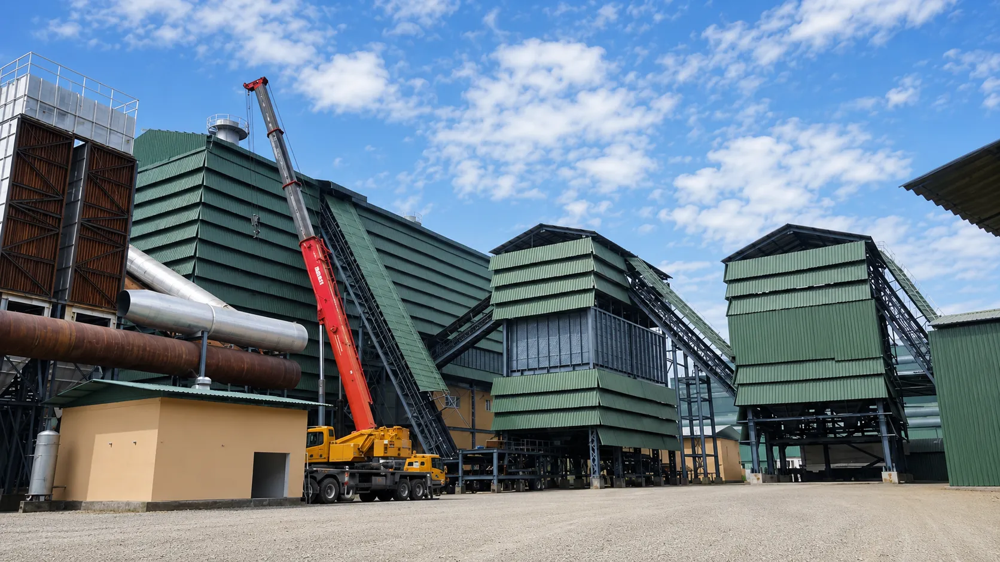
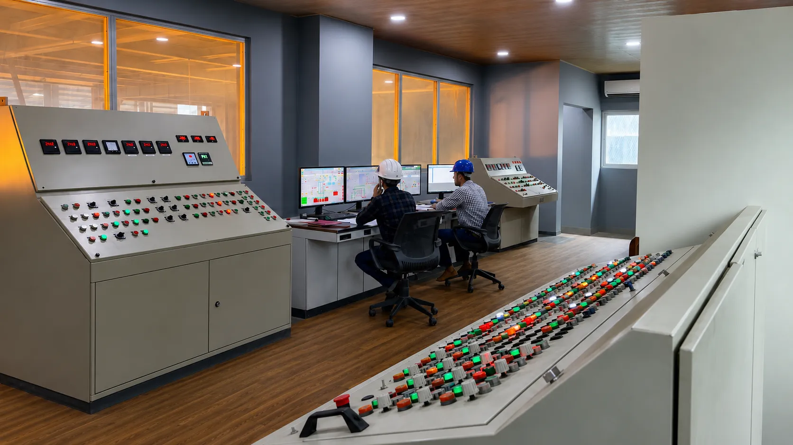
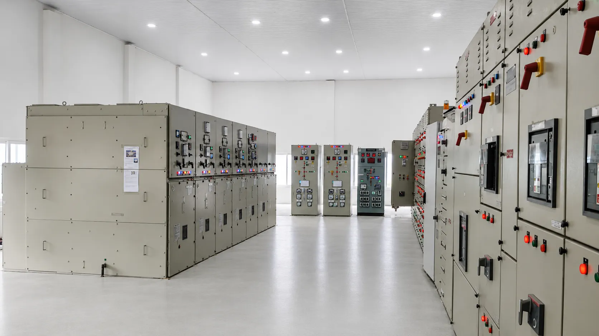
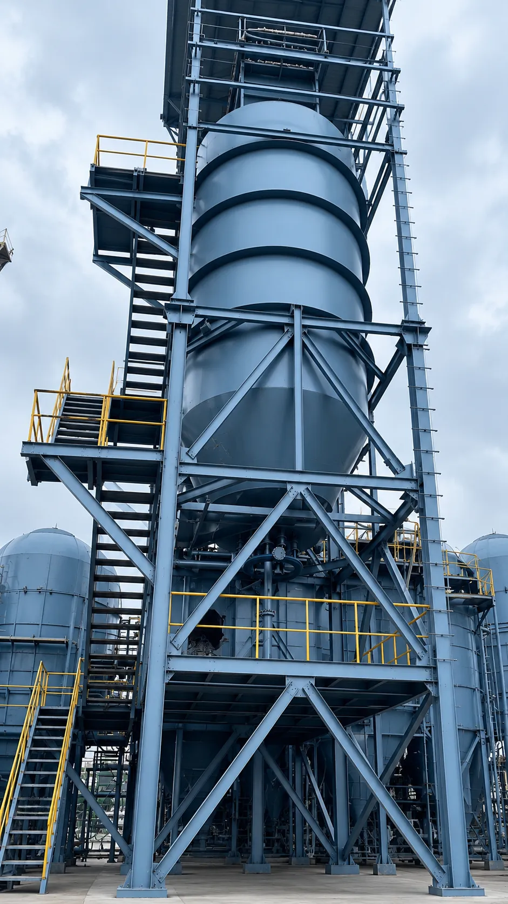
|
Corporate office
Ashi Building No-4, 1st Floor, Chuba Lam 2, Olakha, PO: 1958, Thimphu |
Factory site
Norbugang Industrial Park, Plot No LCHE-16, Samtse, Bhutan |
Production setup
18 MVA, configured as 2 x 9 MVA submerged arc furnaces |
Export markets

Buyers in Europe, India, and neighbouring markets expect clarity, speed, documentation, and consistency. Aja Alloys combines Bhutan's clean energy base, submerged arc furnace production, and international Ferro Silicon export experience to serve customers worldwide.
Cleaner energy position, documentation readiness, technical clarity, and dependable long-term supply.
Regional proximity, familiar Ferro Silicon demand, faster commercial conversations, and responsive dispatch coordination.
Direct enquiry route, buyer-specific certificates, packing details, and export document support for worldwide customers.
Built around repeat industrial supply, quality production, and responsive commercial communication.
Modern submerged arc furnace production with product specifications and buyer documents presented clearly.
Restrained industrial identity for procurement teams, traders, and manufacturers.
Backed by team experience in Ferro Silicon production and exports across India, Malaysia, and Kuwait.
Product range
Aja Alloys supplies Ferro Silicon for steelmaking, foundry, and alloy applications, with Micro Silica (Silica Fume) available as a by-product from furnace operations.

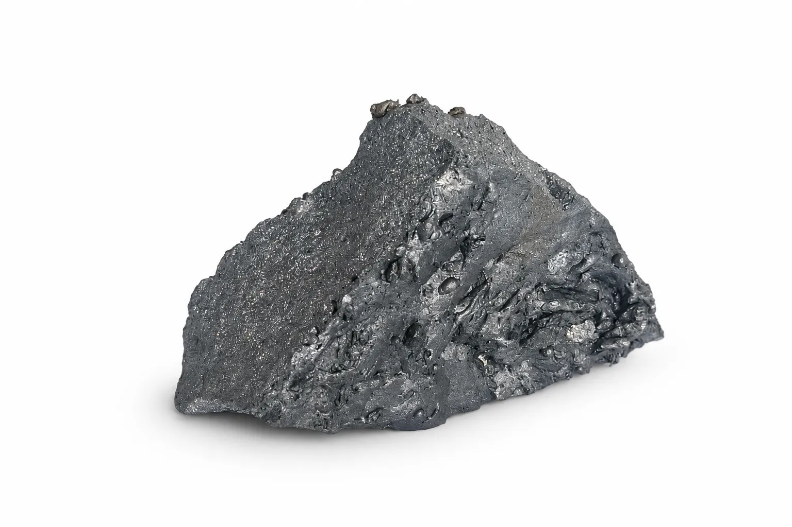
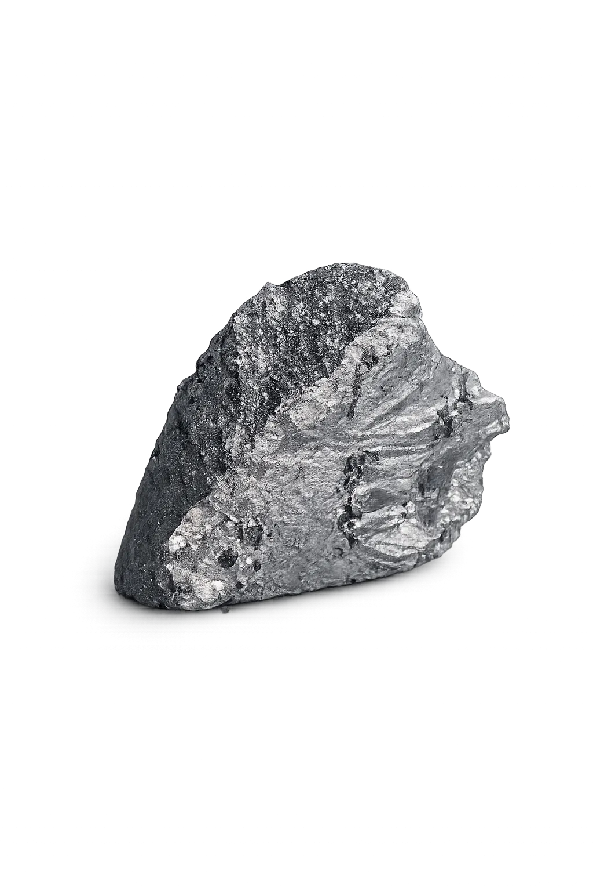
Ferro Silicon is used as a deoxidiser, alloying additive, and foundry inoculant. Aja Alloys produces Ferro Silicon using modern submerged arc furnace technology and will present specifications, packing options, and dispatch documentation in a format suited to importers, traders, and direct industrial users.

Micro Silica, also known as Silica Fume, is generated as a by-product of Ferro Silicon production. It can be supplied for buyer review once collection, packing, quality parameters, and commercial terms are confirmed.
Quality and compliance
Batch wise testing, production traceability, and certificate of analysis presentation can be integrated into the final product workflow.
BIS, ISO, laboratory reports, export documents, and buyer specific certificates can be added once issued or confirmed by management.
Bhutan's clean hydroelectric power base allows Aja Alloys to communicate a cleaner manufacturing advantage to customers seeking lower carbon supply chains.
The site includes a dedicated health, safety, and environmental commitment section that can later carry policies, training records, and audit documents.
Ferro Silicon
| Grade | Si % Min | Al % Max | Carbon % Max | Sulphur % Max | Phosphorus % Max | Size, mm |
|---|---|---|---|---|---|---|
| 75-80% | 75 | 1.5 | 0.15 | 0.05 | 0.05 | 50-100, 10-50 |
| 70-75% | 70 | 1.5 | 0.15 | 0.05 | 0.05 | 50-100, 25-150, 10-60 |
| 65-70% | 65 | 1.5 | 0.15 | 0.05 | 0.05 | 50-100, 25-150 |
Packing Standard packing can be provided in 1 MT jumbo bags or 40 kg outer jute bags with HDPE bags inside. Special packing sizes and product with higher or lower aluminium, carbon, sulphur, and phosphorus can be produced on customer request.
Micro Silica
| Specification | SiO2 | Moisture | LOI | Coarse particles, +45 micron | Bulk density, kg/m3 |
|---|---|---|---|---|---|
| Specification 1 | 85% Min | 1% Max | 3% Max | 5% Max | 550-700 |
| Specification 2 | 80% Min | 1% Max | 3% Max | 5% Max | 550-700 |
Packing Jumbo bag bulk packing, approximately 700 kg, or 25 kg HDPE bags.
Operations

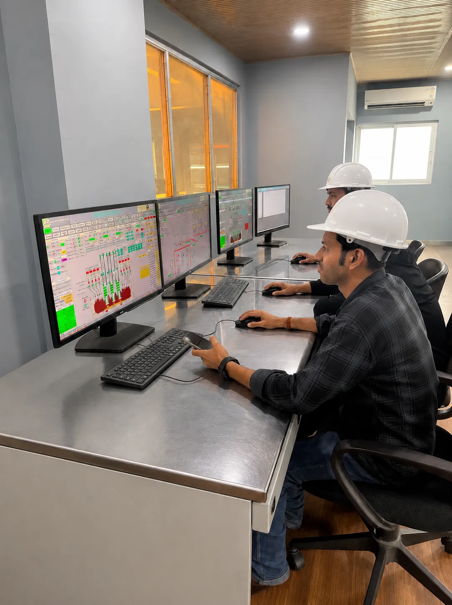
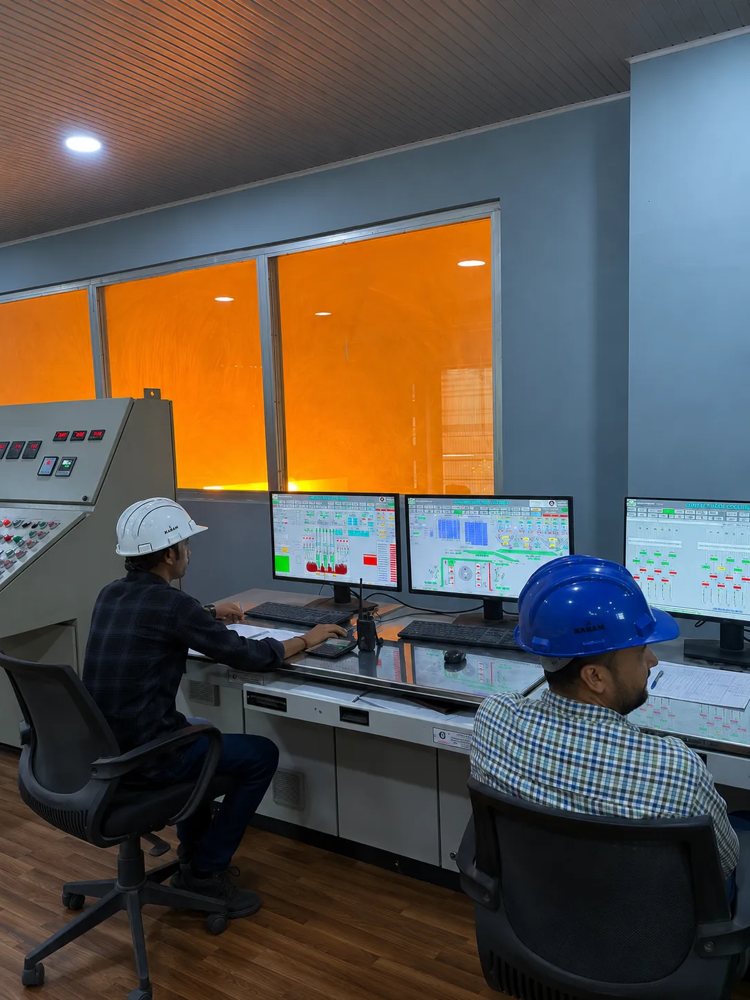
Qualified quartz, carbonaceous materials, and steel inputs, with supplier and lot traceability to be reflected in procurement records.
18 MVA production setup configured as 2 x 9 MVA submerged arc furnaces for high-quality Ferro Silicon manufacturing at the Samtse factory site.
Product handling sections can later be updated with exact crushing, screening, sizing, packing, and loading images from the factory.
Commercial invoice, packing list, certificate of analysis, origin documentation, and buyer specific compliance support can be described here.
Information
Public adverts and official updates from Aja Alloys will be posted here.
Plant readiness and buyer updates.
Specifications, certificates, and export documents.
Furnace operation and shift reporting.
Sampling records and dispatch documents.
Bags, labels, pallets, and dispatch support.
Laboratory materials, PPE, and consumables.
FAQ
Common questions from steel mills, foundries, and traders sourcing Ferro Silicon from Bhutan.
Aja Alloys produces Ferro Silicon (FeSi) at its plant in Samtse, Bhutan, using modern submerged arc furnace technology. Micro Silica (Silica Fume) is available as a by-product of Ferro Silicon production.
We supply standard Ferro Silicon grades including FeSi 75, FeSi 72, FeSi 70 to 75, and FeSi 65. Sizing, packing, and other specifications can be confirmed against your requirement. Share your target grade and we will match it where possible.
The production plant is at Norbugang Industrial Park, Plot No LCHE-16, Samtse, Bhutan, with the corporate office in Olakha, Thimphu. Buyers can coordinate with both the factory and corporate teams directly.
Yes. Aja Alloys serves steelmakers, foundries, traders, and industrial buyers worldwide, with particular focus on Europe, India, and neighbouring markets. The team brings Ferro Silicon production and export experience from plants in India, Malaysia, and Kuwait.
Our Ferro Silicon is produced using Bhutan's clean hydroelectric power and an 18 MVA setup configured as 2 x 9 MVA submerged arc furnaces. This gives a lower-carbon energy base alongside clear specifications and reliable export documentation.
Batch-wise testing, production traceability, and certificate of analysis can be integrated into the supply workflow. BIS, ISO, laboratory reports, and buyer-specific export documents can be provided once issued or confirmed by management.
Email sales@aja.bt or use the enquiry form below. Include the grade, quantity (in MT), and delivery destination so the right team can respond quickly with commercial terms.
Contact
Ashi Building No-4, 1st Floor, Chuba Lam 2, Olakha, PO: 1958, Thimphu
Telephone: +975-1712 5900
Email: tandin@aja.bt
Norbugang Industrial Park, Plot No LCHE-16, Samtse, Bhutan
Telephone: +975-1765 0842
Email: tenzin@aja.bt